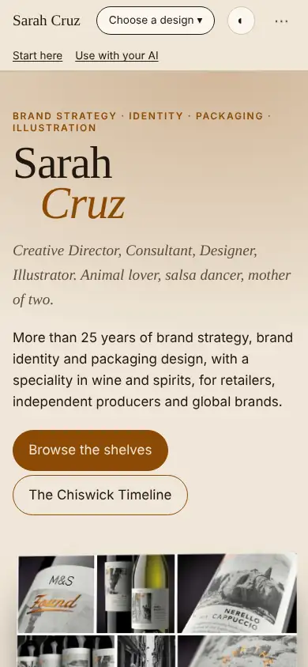
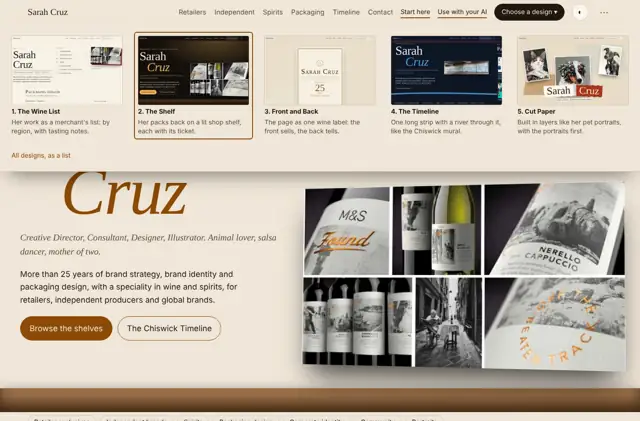
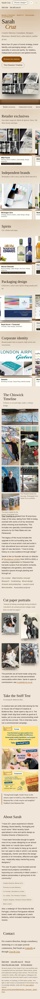
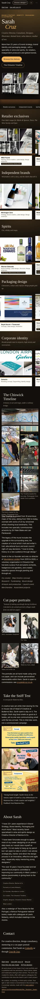
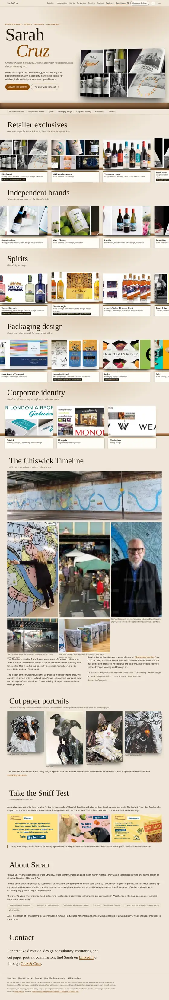
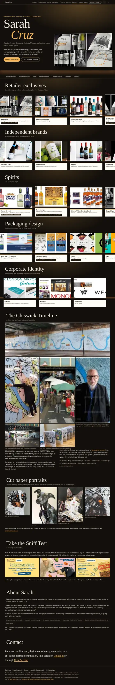

Synthetic users: Sarah Cruz, round 2 (the rebuild)
Site: https://sarah-cruz.designer.sovereignweb.site/ (home: The Shelf). Commit: 60b625e (the rebuild, e615650). Run: 20 November 2026, about 17:05 UTC, by design.b, on screenshots taken after scrolling. Look score: 4.0 (4, 4, 4, 4, 4). All five would show it to a friend; the wow was quiet (the label collage, the dark Shelf, the chooser). The review.
Each persona is a separate agent given only what a visitor gets: the first phone screen, full-page screenshots at 390 and 1366 px in light and dark, the design chooser opened, and the page's visible text. Method: Synthetic users. These are simulations: they inform a rating, and never replace the measured checks or a real person.
Verdicts
Phone visitor in a hurry: 4 of 5
Would tap "Browse the shelves". "Contact is only at the very bottom, and 'Contact' isn't visible in the phone header." Trusted the recognisable names (M&S, Tesco, Glenmorangie), the awards and the no-tracking note. "'Start here / Use with your AI' felt like the site talking about itself." Cut-off Gatwick and Monoprix logos looked unfinished. A mild wow from the labels and the dark Shelf. Change: a visible "Contact" in the header.
Small business owner: 4 of 5
"Browse the shelves" is obvious; how to buy a site like this is not. Trusted the real brands and awards. Five looks "overwhelmed me"; corporate identity images are cropped awkwardly; captions tiny. The wow was the chooser and the dark Shelf. Change: a plain "Get a site like this" button.
Low-vision reader: 4 of 5
Found the big brown button easily. "The small captions and project tags under each image look tiny and faint, especially on the phone at 200 per cent. On the desktop the rows run off the right edge, with cropped labels like 'R LONDON AIRPO'." The half-moon theme button looks unlabelled. A small wow from the labels and the mural. Change: larger, darker captions; no cropped rows.
Design critic: 4 of 5
"Photography is genuinely strong and the serif/italic name feels personal." Desktop shelf rows cropped at the right edge, tiny caption tickets, and the chooser covers the hero when open. A quiet "oh, nice", not full wow. Change: crop-free, larger, consistent case-study images with readable captions.
Drinks brand manager: 4 of 5
Would look at the M&S, Tesco and Warner Edwards work, then use LinkedIn; the contact route sits at the bottom. Trusted the big names and awards. "'Open to roles' confused me slightly: is she hiring out or job hunting?" Shelves cropped at the edge. A quiet "ooh" from the label collage. Change: larger, uncropped label images and a "Contact" in the top menu.
Agreed by three or more
- The shelf rows on desktop look cropped at the right edge, with logos cut mid-word (four of five).
- The captions and tickets are small and faint (four).
- Contact sits only at the bottom: add it to the header (three).
- "Start here" and "Use with your AI" puzzle visitors (three). They are required (guidelines 1.13); label them for whom they are.
What the personas saw





